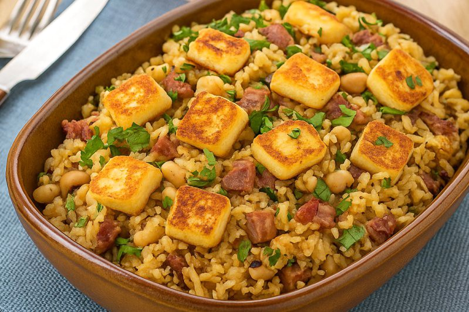
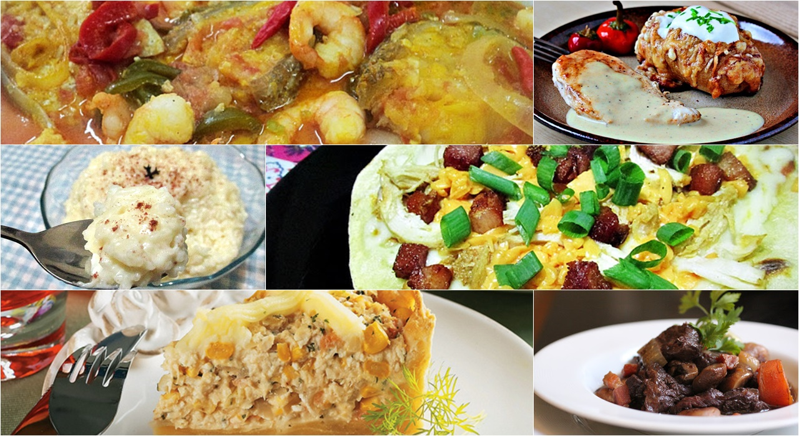
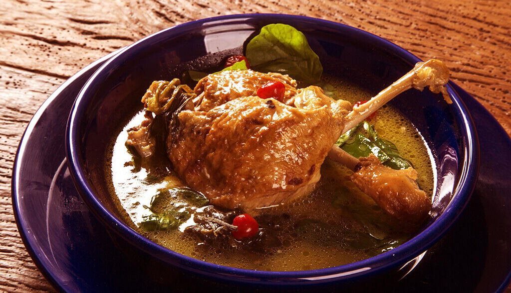
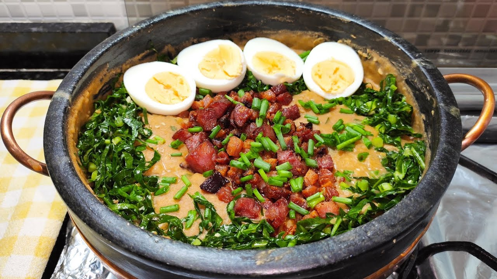

Nordeste
Baião de dois
Arroz e feijão-de-corda cozidos juntos, com queijo coalho e carne de sol. Prato do sertão cearense.
Ver curiosidadeCada região do país tem ingredientes, histórias e modos de preparo próprios. Este site reúne pratos típicos das cinco regiões para quem quer conhecer a culinária brasileira e descobrir o que provar em cada lugar.
Conhecer os pratos Perguntas frequentes
Página 1: Nordeste, Norte e Sudeste.

Arroz e feijão-de-corda cozidos juntos, com queijo coalho e carne de sol. Prato do sertão cearense.
Ver curiosidade
Pato assado e cozido no tucupi, caldo extraído da mandioca brava. Símbolo do Círio de Nazaré, em Belém.
O que é tucupi?
Feijão engrossado com farinha de mandioca, acompanhado de couve, torresmo e ovo. Clássico de Minas Gerais.
Mais informações